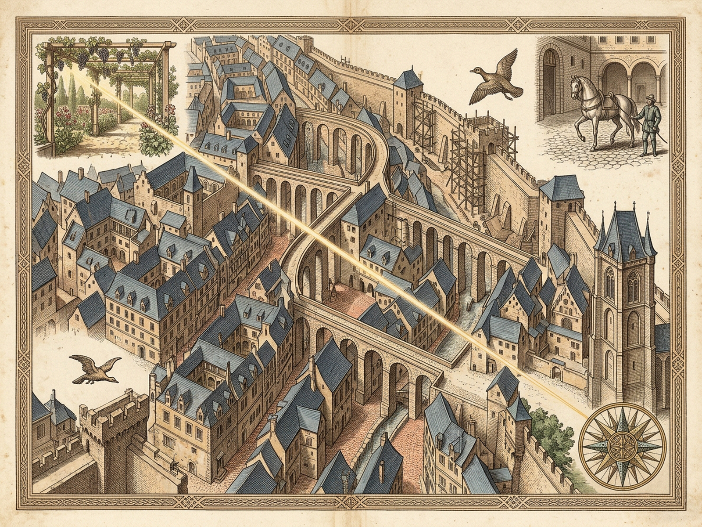
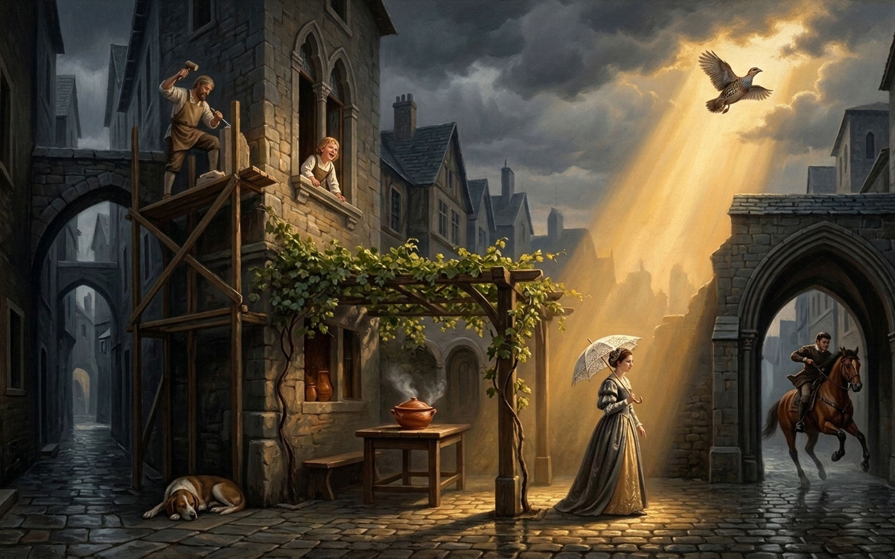

RAISSACity of Unrelieved Sadness & the Unseen Simultaneous ThreadSADNESS: CONSTANT · HAPPY SKEIN: 10/10River Embankment Railings · Overt Sadness UnabatedHOVER OR CLICK CHAMBERS & GOLDEN NODESAbove the rain-pocked black river arch, bowed citizens lean on wet iron railings pressing clenched fists against their temples while the unseen golden filament darts overhead.LIVE t=0.000s · SHUTTER OPENCOEXISTING LINKS: 10 / 10SKEIN GEN #1 · 0ms GAPHAPPY CITY SELF-AWARE: FALSEFRANCOLIN PARCHMENT ILLUMINATIONSPECKLED RED & YELLOW FEATHERAlso in Raissa, city of sadness, there runs an invisible thread that binds one living being to another for a moment, then unravels, then is stretched again between moving points as it draws new and rapid patterns so that at every second the unhappy city contains a happy city unaware of its own existence.LINK 03 / 10 · HIGH TIMBER SCAFFOLDING STAGE440.00 Hz LYDIANYoung stonemason on the upper scaffoldingA stonemason dropped the polenta from the scaffolding, shouting in high spirits to a young serving-maid: “Darling, let me dip into it!”Calls down merrily toward the steaming ragout ->Simultaneity Proof: At every continuous millisecond inside grim Raissa, all 8 overt sorrow chambers persist while 10/10 causal joy links stretch instantaneously across moving points without a single empty frame.overtSadnessConstant: trueeverySecondContainsHappyChain: trueinvisibleThreadActiveEverySecond: truehappyCityAwareOfItself: falseCONTINUOUS 10-LINK CAUSAL JOY FILAMENT · CLICK ANY BEAD OR PRESS [1-9, 0, ←, →]10 / 10 NODES BOUND · PATTERN #101 · Laughing Child349 HzChild in a casement window laughs aloud seeing the dog leap below02 · Polenta Dog392 HzDog jumps onto a zinc shed roof to bite into a piece of fallen polenta03 · Stonemason440 HzDrops polenta from scaffolding shouting “Darling, let me dip into it!”04 · Ragout Maid494 HzServing-maid holds up a steaming dish of ragout under the pergola05 · Parasol Maker523 HzUmbrella-maker celebrates selling a finely crafted white lace parasol06 · Rampart Lady587 HzGreat lady displays her white lace parasol at the rampart races07 · Jumping Officer659 HzBeloved officer smiles at her while leaping the last barricade jump08 · Flying Horse698 HzHappier horse flies over obstacles seeing a francolin flying in the sky09 · Freed Francolin784 HzHappy francolin bird liberated from its cage by a rejoicing painter10 · Illuminator880 HzPaints red-and-yellow speckled feather on the philosopher’s parchmentROYAL PLATES OF RAISSA · SURVEY & ILLUMINATIONPLATE I · CARTOGRAPHIC CUTAWAY SURVEY OF RAISSA (map.png)

PENDING_IMAGE_GENERATOR_QUOTA · RESET 2026-11-11T06:21:14ZArchival copperplate cutaway rendered locally while royal plate awaits generator quota window.PLATE II · ILLUMINATED VIEW OF HIDDEN & UNHAPPY RAISSA (image.png)

PENDING_IMAGE_GENERATOR_QUOTA · RESET 2026-11-11T06:21:14ZArchival francolin parchment illumination rendered locally while royal vista awaits generator quota window.